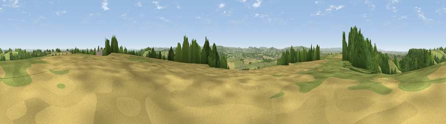

Viewpoint near East Chinnock
#16094 in England · top 35% of its area beats it · near East ChinnockWhere it is
The exact computed spot (ST 48975 14375). Click the marker for map links.
The view, rendered

A 360° render of this exact spot computed from the terrain model, tree cover and land cover — summer colours, afternoon light, calibrated against photographs of famous viewpoints. Real trees, hedges and buildings will differ in detail.
The panorama
Grey silhouette: terrain skyline in each direction (720 bearings, Earth curvature and refraction included). Dashed green: skyline with trees (+15 m) and buildings (+8 m) as obstacles. Blue strip: how far the ground is visible on each bearing.
Where the view opens
Wedge length = distance to the farthest visible ground on that bearing (vegetation-aware). Rings at 10, 25 and 50 km.
What fills the view
52% grassland · 27% woodland · 18% cropland · 3% built-up
Angular shares of the visible panorama (visual magnitude), not map area. Landscape diversity 0.48 (0–1 Shannon).
Key numbers
More beautiful places nearby
The staircase of upgrades: each row has a higher view potential than everything closer. Driving times are estimates from straight-line distance, calibrated against real road routing — check an actual route before setting out.
| Place | Direction | Drive | Score |
|---|---|---|---|
| Brympton Hill | W · 2 km | ~5 min | 63.9 |
| Viewpoint near Montacute | N · 3 km | ~7 min | 69.8 |
| Ham Hill | NNW · 3 km | ~8 min | 73.5 |
| Viewpoint near Hewish | WSW · 9 km | ~18 min | 78.5 |
| Lewesdon Hill | SSW · 14 km | ~26 min | 83.3 |
| Viewpoint near North Chideock | SSW · 23 km | ~38 min | 87.1 |
| Golden Cap | SSW · 24 km | ~39 min | 88.7 |
| The Knoll | S · 27 km | ~43 min | 91.0 |
50.92656, -2.72738 · source: screening · position refined by local search. Computed location — check access rights before visiting.